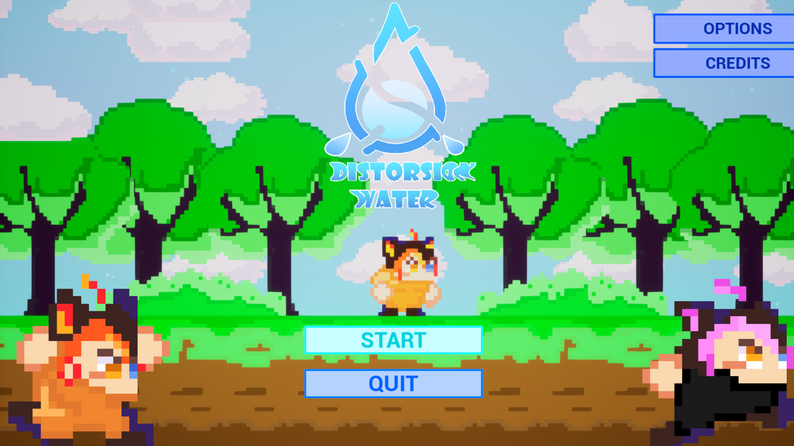
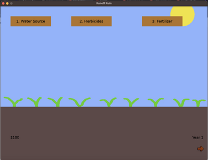

Aqua Arcade Game Jam

The 'Aqua Arcade Game Jam was a collaborative effort between Secure Water Future and the UC Merced Game Development Club (GDC).
This 48-hour event aimed to ignite students' passion for game development, offering them a platform to design their own games and propel their future careers in the gaming industry.
UC Merced and Merced College participants worked in teams of up to five, utilizing their preferred game engines to create games with an educational twist, focusing on hydrology. This event fostered teamwork and innovation and highlighted the intersection of gaming and environmental education.
UC Merced | 5200 Lake Road, Merced, CA 95343
Thank you for participating in this years' Game Jam! Keep an eye out for future announcements!Here are some games students made!
Distorsion Water

2D platform game in which you embark on an adventure to prevent the pollution of the river that supplies water to the village. To achieve this, you will progress through different levels to activate magic buttons that will restore the river to its former state. To accomplish this honorable task, you will have to navigate through a distortion of reality to continue advancing.
Runoff Ruin

Game showing the tradeoffs and effects of certain watering practices in a simplified manner.